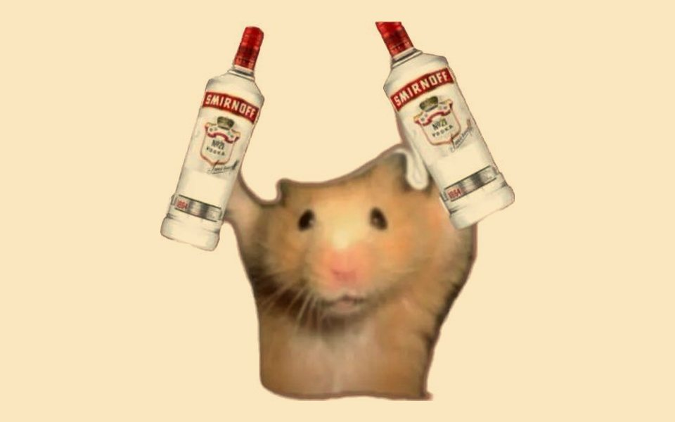

Toca cada mito para ver qué hay de cierto.
Mito“Solo bebo los fines de semana, así que no tengo problema.”
Realidad: Beber mucho en pocas horas es una de las formas de consumo más riesgosas, aunque sea de vez en cuando. Intoxicación, accidentes y lagunas pueden ocurrir en una sola noche.
Mito“Si es cerveza o vino, no es tan grave.”
Realidad: Lo que importa es la cantidad de alcohol puro, no el tipo de bebida. Una cerveza, un vino y un trago de destilado tienen cantidades similares por porción estándar.
Mito“Aguanto mucho, así que el alcohol no me afecta.”
Realidad: Tolerar más alcohol suele ser señal de que el cuerpo se está adaptando, y eso aumenta el riesgo de dependencia en lugar de reducirlo.
Mito“Un café o una ducha fría ayudan a bajar la borrachera.”
Realidad: Solo el tiempo elimina el alcohol del cuerpo. Una persona muy intoxicada, dormida o que no reacciona necesita atención médica.
Mito“Es solo una etapa; ya se le pasará.”
Realidad: En muchos casos sí baja con el tiempo, pero cuando hay señales de problema, esperar solo deja que se agrave. Hablar a tiempo ayuda más que callar.